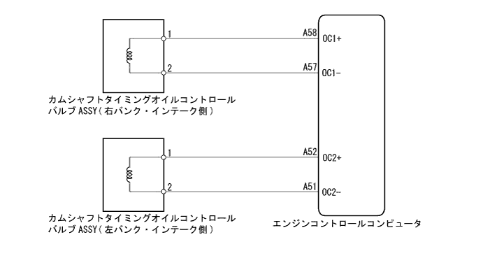
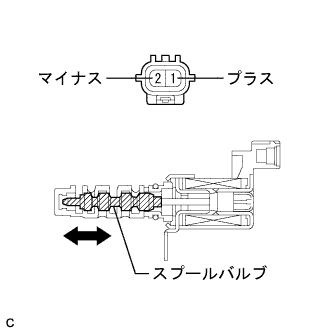
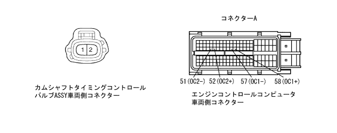

DTC P0010/39 VVT OCV System |
DTC P0020/39 VVT2 OCV Circuit |

| DTCNo. SAE/TCCS | DTC Detection Condition
| Inspection Area |
|---|---|---|
| P0010/39 |
|
|
| P0020/39 |
|
|

| Step 1 | Read DTC |
Connect SST (TaSCAN) to DLC3.
Turn the IG ON and read the DTCs following the SST (TaSCAN) screen display. (see)
| Result | Proceed to |
|---|---|
| P0010/39 is output | A |
| P0020/39 is output | B |
|
| ||||
| A | |
| Step 2 | Perform TaSCAN Active Test (VVT Control) |
Connect SST (TaSCAN) to DLC3.
With the engine stopped, turn the IG ON.
Following the SST (TaSCAN) screen display, select [Active Test] - [VVT Control].
With the engine idling, perform [ON/OFF].
| Active Test (Oil Control Valve Condition) | Engine Condition |
|---|---|
| Performed (OCV operates) | Engine stalls or idles roughly |
| Not performed (OCV does not operate) | Normal idle speed |
|
| ||||
| OK | ||
| ||
| Step 3 | Perform TaSCAN Active Test (VVT Control Bank 2) |
Connect SST (TaSCAN) to DLC3.
With the engine stopped, turn the IG ON.
Following the SST (TaSCAN) screen display, select [Active Test] - [VVT Control Bank 2].
With the engine idling, perform [ON/OFF].
| Active Test (Oil Control Valve Condition) | Engine Condition |
|---|---|
| Performed (OCV operates) | Engine stalls or idles roughly |
| Not performed (OCV does not operate) | Normal idle speed |
|
| ||||
| OK | ||
| ||
| Step 4 | Inspect Camshaft Timing Oil Control Valve Assembly |
Remove the camshaft timing oil control valve assembly (intake side). (see)
Resistance Inspection
Using SST (Toyota electrical tester), measure the resistance between the terminals.
| Tester Connection | Condition | Standard |
|---|---|---|
| Terminal 1 - Terminal 2 | Approx. 20°C | 6.9 to 7.9Ω |
 |
Operation Check
Apply battery voltage between the terminals and check that the spool valve operates.
| Result | Proceed to |
|---|---|
| OK | A |
| RH side malfunction | B |
| LH side malfunction | C |
|
| ||||
|
| ||||
| A | |
| Step 5 | Inspect Wire Harness and Connector (Engine Control Computer - Camshaft Timing Oil Control Valve Assembly) |
ReferenceDisconnect connector A of the engine control computer.
Disconnect the camshaft timing oil control valve assembly connector.
Using SST (Toyota electrical tester), measure the resistance between the terminals. (For Terminals of ECU, see)

| Tester Connection (Terminal Symbol) | Condition | Standard |
|---|---|---|
| A58 (OC1+) - Terminal 1 (for RH bank) | Always | Below 1 Ω |
| A57 (OC1-) - Terminal 2 (for RH bank) | Always | Below 1 Ω |
| A52 (OC2+) - Terminal 1 (for LH bank) | Always | Below 1 Ω |
| A51 (OC2-) - Terminal 2 (for LH bank) | Always | Below 1 Ω |
| Tester Connection (Terminal Symbol) | Condition | Standard |
|---|---|---|
| A58 (OC1+) and terminal 1 (for RH bank) - Other terminals and body ground | Always | 10k Ω or higher |
| A57 (OC1-) and terminal 2 (for RH bank) - Other terminals and body ground | Always | 10k Ω or higher |
| A52 (OC2+) and terminal 1 (for LH bank) - Other terminals and body ground | Always | 10k Ω or higher |
| A51 (OC2-) and terminal 2 (for LH bank) - Other terminals and body ground | Always | 10k Ω or higher |
|
| ||||
| OK | ||
| ||